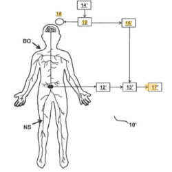
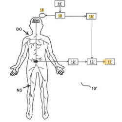

Contexto Comercial
Patente 1:Sistema para el tratamiento de la escoliosis idiopática
 Sistema para el tratamiento de la escoliosis idiopática caracterizado porque comprende un dispositivo subcutáneo o submuscular programable conectado mediante un cableado con una pluralidad de sensores configurados para el registro de las señales electromiográficas y una pluralidad de estimuladores configurados para ia estimulación de los músculos paraespinales de modo que estos se contraigan contrarrestando la desviación de la columna.[1]
Sistema para el tratamiento de la escoliosis idiopática caracterizado porque comprende un dispositivo subcutáneo o submuscular programable conectado mediante un cableado con una pluralidad de sensores configurados para el registro de las señales electromiográficas y una pluralidad de estimuladores configurados para ia estimulación de los músculos paraespinales de modo que estos se contraigan contrarrestando la desviación de la columna.[1]
Patente 2:Sistema ortopédico inteligente de escoliosis y método de control
La invención proporciona un sistema ortopédico inteligente para la escoliosis y un método de control. El sistema comprende una órtesis para escoliosis y una plataforma de análisis inteligente a distancia. La ortesis para escoliosis comprende un cuerpo de ortesis, estructuras de inflado de microcavidades multicelulares de múltiples juntas, dispositivos de detección de presión de estructura de inflado de microcavidades multicelulares, un dispositivo de detección de presión única, un dispositivo de control central y un dispositivo de ajuste de presión. El cuerpo de la órtesis se personaliza de acuerdo con la condición de escoliosis de los niños / adolescentes con escoliosis. Las estructuras de inflado de microcavidades multicelulares de tipo junta se colocan en el lado interior del cuerpo de la órtesis y se distribuyen en las partes correspondientes del pecho, la cintura y la pelvis del cuerpo humano. El dispositivo de control central emite señales de control de acuerdo con los datos detectados por los dispositivos de detección de presión de la estructura de inflado de microcavidades de celdas múltiples y el único dispositivo de detección de presión, el dispositivo de ajuste de presión ajusta la presión ortopédica aplicada por las estructuras de inflado de microcavidades de celdas múltiples de tipo junta, y el se realiza el propósito de la ortesis de escoliosis.[2]
Patente 3:Instrumento de observación de escoliosis
El instrumento de observación de la escoliosis puede obtener imágenes tridimensionales de la columna moviéndose a lo largo de esta para obtener información relevante sobre la escoliosis. Sirve para un monitoreo diario. El instrumento de observación de la escoliosis tiene un tamaño pequeño y una estructura simple, lo que es beneficioso para la producción, el uso y la promoción a gran escala.[3]
Patente 4:Sistemas y métodos de seguimiento de la rehabilitación muscular
Se proporciona un sistema y método para rehabilitar un músculo y monitorear dicha rehabilitación, el sistema incluye un receptor de entrada de usuario para recibir entradas de parámetros de estimulación de un usuario, un estimulador para generar estimulaciones que se aplicarán al cuerpo de un paciente en base a las entradas de parámetros de estimulación, un receptor de señales para recibir, detectar y registrar una señal que contiene un potencial evocado generado por el cuerpo en respuesta a los estímulos, un procesador de señales para procesar la señal grabada, por ejemplo, amplificando, filtrando, digitalizando y promediando temporalmente la señal grabada, un detector de disparo para alertar al módulo procesador de señales cuando se genera estimulaciones para permitir la sincronización de la señal de respuesta con el estímulo para un promedio temporal preciso,y una pantalla de salida para proporcionar datos representativos del potencial evocado al usuario.[4]
Patente 5:Camiseta sin mangas con sensor corporal y sistema de biorretroalimentación para pacientes con escoliosis
 Esta patente plantea una prenda de vestir que permite monitorear señales de pacientes escolióticos y ofrece una biorretroalimentación personalizada.[5]La biorretroalimentación es un proceso no médico que tiene por objetivo medir las funciones corporales y mostrar la información al usuario a tiempo real con el objetivo de apoyar a los pacientes en el control de algunos procesos psico-fisiológicos específicos. En esta patente, múltiples sensores en la prenda evalúan la postura del usuario y la información se hace disponible al mismo en su teléfono celular, con el objetivo de ayudar al mismo a entrenarse para mantener una postura adecuada. La biorretroalimentación es muy utilizada incluso fuera del ámbito médico y aplicada en la tecnología de los wearables. Diversos sensores han sido utilizados para medir parámetros fisiológicos como temperatura, frecuencia cardiaca y respiratoria, lo que se puede ver en productos como las líneas de ropa Ambiotex[6] y Hexoskin.[7] La efectividad de esta patente ha sido evaluada en el trabajo realizado por Joanne Yip (2020)[8] en el cual se comprueba una reducción de la postura patológica del usuario luego del entrenamiento con el dispositivo, reflejada en un cambio electromiográfico de hasta la mitad en el uso de grupos musculares como el trapecio y los erectores de la columna.
Esta patente plantea una prenda de vestir que permite monitorear señales de pacientes escolióticos y ofrece una biorretroalimentación personalizada.[5]La biorretroalimentación es un proceso no médico que tiene por objetivo medir las funciones corporales y mostrar la información al usuario a tiempo real con el objetivo de apoyar a los pacientes en el control de algunos procesos psico-fisiológicos específicos. En esta patente, múltiples sensores en la prenda evalúan la postura del usuario y la información se hace disponible al mismo en su teléfono celular, con el objetivo de ayudar al mismo a entrenarse para mantener una postura adecuada. La biorretroalimentación es muy utilizada incluso fuera del ámbito médico y aplicada en la tecnología de los wearables. Diversos sensores han sido utilizados para medir parámetros fisiológicos como temperatura, frecuencia cardiaca y respiratoria, lo que se puede ver en productos como las líneas de ropa Ambiotex[6] y Hexoskin.[7] La efectividad de esta patente ha sido evaluada en el trabajo realizado por Joanne Yip (2020)[8] en el cual se comprueba una reducción de la postura patológica del usuario luego del entrenamiento con el dispositivo, reflejada en un cambio electromiográfico de hasta la mitad en el uso de grupos musculares como el trapecio y los erectores de la columna.
Patente 6:Almohadilla ortopédica para mejorar la escoliosis idiopática adolescente (AIS)
La invención proporciona una almohadilla ortopédica para mejorar la escoliosis idiopática adolescente (AIS). Son almohadillas pequeñas intercambiables fijadas al cuerpo de la almohadilla ortopédica. Las almohadillas pequeñas se apilan en orden de mayor a menor para formar un pico, y el número y la posición de las almohadillas pequeñas se pueden ajustar para lograr un pico personalizado adecuado para un paciente, es decir, el número y la posición de las almohadillas pequeñas. Las almohadillas se ajustan para ajustar la posición y el ángulo del pico para proporcionar una fuerza vectorial a la escoliosis del paciente. El ciclo de producción de la almohadilla ortopédica es más corto que el del stent duro AIS, lo que garantiza que el paciente pueda recibir tratamiento a tiempo después del diagnóstico de AIS, y los accesorios prefabricados permiten un ajuste o reemplazo inmediato según las condiciones durante el tratamiento.[9]
Contexto Comercial
Patente 1:Sistema para el tratamiento de la escoliosis idiopática
Patente 2:Sistema ortopédico inteligente de escoliosis y método de control
La invención proporciona un sistema ortopédico inteligente para la escoliosis y un método de control. El sistema comprende una órtesis para escoliosis y una plataforma de análisis inteligente a distancia. La ortesis para escoliosis comprende un cuerpo de ortesis, estructuras de inflado de microcavidades multicelulares de múltiples juntas, dispositivos de detección de presión de estructura de inflado de microcavidades multicelulares, un dispositivo de detección de presión única, un dispositivo de control central y un dispositivo de ajuste de presión. El cuerpo de la órtesis se personaliza de acuerdo con la condición de escoliosis de los niños / adolescentes con escoliosis. Las estructuras de inflado de microcavidades multicelulares de tipo junta se colocan en el lado interior del cuerpo de la órtesis y se distribuyen en las partes correspondientes del pecho, la cintura y la pelvis del cuerpo humano. El dispositivo de control central emite señales de control de acuerdo con los datos detectados por los dispositivos de detección de presión de la estructura de inflado de microcavidades de celdas múltiples y el único dispositivo de detección de presión, el dispositivo de ajuste de presión ajusta la presión ortopédica aplicada por las estructuras de inflado de microcavidades de celdas múltiples de tipo junta, y el se realiza el propósito de la ortesis de escoliosis.[2]
Patente 3:Instrumento de observación de escoliosis
El instrumento de observación de la escoliosis puede obtener imágenes tridimensionales de la columna moviéndose a lo largo de esta para obtener información relevante sobre la escoliosis. Sirve para un monitoreo diario. El instrumento de observación de la escoliosis tiene un tamaño pequeño y una estructura simple, lo que es beneficioso para la producción, el uso y la promoción a gran escala.[3]
Patente 4:Sistemas y métodos de seguimiento de la rehabilitación muscular
Se proporciona un sistema y método para rehabilitar un músculo y monitorear dicha rehabilitación, el sistema incluye un receptor de entrada de usuario para recibir entradas de parámetros de estimulación de un usuario, un estimulador para generar estimulaciones que se aplicarán al cuerpo de un paciente en base a las entradas de parámetros de estimulación, un receptor de señales para recibir, detectar y registrar una señal que contiene un potencial evocado generado por el cuerpo en respuesta a los estímulos, un procesador de señales para procesar la señal grabada, por ejemplo, amplificando, filtrando, digitalizando y promediando temporalmente la señal grabada, un detector de disparo para alertar al módulo procesador de señales cuando se genera estimulaciones para permitir la sincronización de la señal de respuesta con el estímulo para un promedio temporal preciso,y una pantalla de salida para proporcionar datos representativos del potencial evocado al usuario.[4]
Patente 5:Camiseta sin mangas con sensor corporal y sistema de biorretroalimentación para pacientes con escoliosis
Patente 6:Almohadilla ortopédica para mejorar la escoliosis idiopática adolescente (AIS)
La invención proporciona una almohadilla ortopédica para mejorar la escoliosis idiopática adolescente (AIS). Son almohadillas pequeñas intercambiables fijadas al cuerpo de la almohadilla ortopédica. Las almohadillas pequeñas se apilan en orden de mayor a menor para formar un pico, y el número y la posición de las almohadillas pequeñas se pueden ajustar para lograr un pico personalizado adecuado para un paciente, es decir, el número y la posición de las almohadillas pequeñas. Las almohadillas se ajustan para ajustar la posición y el ángulo del pico para proporcionar una fuerza vectorial a la escoliosis del paciente. El ciclo de producción de la almohadilla ortopédica es más corto que el del stent duro AIS, lo que garantiza que el paciente pueda recibir tratamiento a tiempo después del diagnóstico de AIS, y los accesorios prefabricados permiten un ajuste o reemplazo inmediato según las condiciones durante el tratamiento.[9]
Contexto Científico
Lista de requerimientos
"El avance desregulado de la escoliosis idiopática"
MAPA DE EMPATÍA
DIAGRAMA DE ISHIKAWA
MAPA DE VIAJE DEL PACIENTE
Referencias:
[1] Tejeda Barreras, M. (2011). Escoliosis: concepto, etiología y clasificación. Www.Medigraphic.Org, 7(2), 75–76.
[2] Yu Zheng, PhD. (2017). Epidemiological study of adolescent idiopathic scoliosis in eastern China. Journal of rehabilation medicine, 49(6).
[3] Konieczny, M. (2012). Epidemiology of adolescent idiopathic scoliosis. Journal of Children's Orthopaedics, 7(1).
[4] Tarifario Rimac. Rimac Seguros.
[5] Kamerlink, J. R., Quirno, M., Auerbach, J. D., Milby, A. H., Windsor, L., Dean, L., ... & Lonner, B. S. (2010). Hospital cost analysis of adolescent idiopathic scoliosis correction surgery in 125 consecutive cases. JBJS, 92(5), 1097-1104.
[6] Ministerio de Salud (2019). Resolución Jefatura N°017-2019/SIS.
[7] Asociación de Ayuda a Niños que sufren de Escoliosis y Deformidades Degenerativas. Disponible en.http://www.escoayuda.org.pe/
[8] Oficina de Epidemiología- INR (2019). Boletín Epidemiológico N°01.Vigilancia Epidemiológica de la discapacidad en el Instituto Nacional de Rehabilitación “Dra. Adriana Rebaza Flores” Amistad-Perú Japón, página 2.
[9] Amaya Solis K. (2021). Confiabilidad y Validez del Cuestionario SRS22 en Adolescentes Peruanos con Escoliosis Idiopática en el Instituto Nacional de Rehabilitación. Resolución Directoral N°027-2021-SA-DG-INR,3-27
[10] Vázquez-Lazarte, A. S., Berta-Benites, C. A., & Runzer-Colmenares, F. M. (2020). Frecuencia de escoliosis idiopática del adolescente en alumnos de secundaria en seis colegios de Lima Norte. Horizonte Médico (Lima), 20(4).
[11] Dirección General de Salud de las Personas(2005). NT N°021-MINSA/DGSP V.01 Categorías de Establecimientos del Sector Salud. Lima-Perú. Ministerio de Salud/Perú. Primera edición.
[12] Instituto Nacional de Estadística e Informática (2020) Infraestructura del Sector Salud por tipo de Establecimiento, según departamento, 2016-2019.
[13] Choi, J. Scoliosis-statistics. Clear Scoliosis Institute.
[14] CLEAR Scoliosis Institute. (2016, 4 febrero). Scoliosis Statistics.
[15] Marketingmedico. (2020, 25 junio). ¿Cuánto cuesta una Cirugía de Escoliosis en México? | Dr Daniel Machuca. Ortopedista en Satélite.